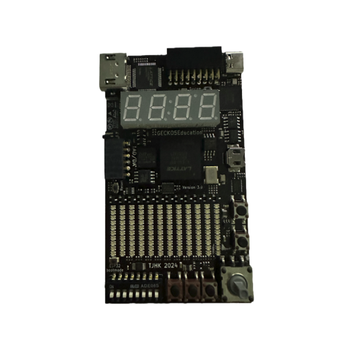

What ?
Implemented Conway’s Game of Life, a zero-player game where evolution is fully determined by the initial seed.
The game runs on an infinite two-dimensional grid of cells.
At each time step, the grid evolves according to a defined set of state-transition rules.
Fully playable on Gecko5 board.
